Introduction
This four part course will get you started with a gentle introduction to extending Orchard at the code level. You will build a very simple module which contains a widget that shows an imaginary featured product.
It will teach you some of the basic components of module development and also encourage you to use best-practices when developing for Orchard.
In this first part we are going to set up our dev environment, scaffold a module and then build a simple Widget inside it.
Prerequisites
This course assumes the following:
-
You have some experience using Orchard and understand its core concepts. Refreshers and links to related guides will be provided.
-
You can read and write C# code.
-
You have some experience with ASP.NET MVC. This doesn't need to be deep but you should be aware of Razor templates, views, strongly-typed models and similar basics.
The course was written and tested against Orchard v1.9.2. It should work in new 1.x branch releases as they come out.
Getting help
If you get stuck or need some support at any point in the course there are several places you can turn:
-
Post a question in the official support forums on CodePlex.
-
Post a question on Stack Overflow tagged with OrchardCMS.
-
Open an issue on the Orchard Doc GitHub repo.
Setting up
First things first, you need to follow the setting up for a lesson guide.
This will take you through the initial steps to set up your dev environment and pull a fresh copy of the source code down. When you've completed it please use your back button to come back to this course.
Getting the most out of this course
Writing an Orchard module that actually does something is going to contain a minimum of 9 different files. You will need to do a lot of development before you can run your module code and see it working in Orchard.
At first you might be overwhelmed by this, but here is a little tip; don't be. Just forge ahead with the tutorial and don't worry if terms like drivers, content parts, or placements seem unfamiliar at the moment. As you continue with your module development you will come across these files many times over. Before long you will start recognizing these core files and you will see how it all fits together.
Course structure
Throughout the course we will alternate between discussing topics and implementing them. The discussion may contain example code or other example scenarios.
So that there is no confusion for you as to what you should be doing, when it comes to implementing these lessons into the module it will be explained step-by-step via numbered lists.
Later on in the course, as the topics become more advanced, we may go through several sections of discussion before wrapping up the lessons into changes to the codebase.
You will also occasionally come across Bonus Exercise sections. These are completely optional. You can skip them, complete them at the time, or come back after completing the course to complete them. They are suggested when there is an extra feature you could implement using the skills you have just learned.
Getting started
Now that you've completed all of the setup tasks you will have a fresh copy of Orchard configured and ready to go.
The rest of this part of the course will walk you through the process required to scaffold an empty module and then build a simple Widget inside of it.
Command line scaffolding with Orchard.exe
You should now be looking at Visual Studio. Down the side, in your Solution Explorer window you will see many files and folders.
The first step to take is to collapse all of the projects down. Its a long list and we need to be able to see an overview of the solution so we can start working with it. You don't need to collapse these individually by hand however:
-
If your Solution Explorer window is not visible click
View,Solution Explorer. -
Click the
Collapse Allicon in the toolbar along the top of the solution explorer. It looks like this: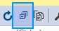
If you expand your Modules folder you will see a long list of the modules which come packaged with Orchard:
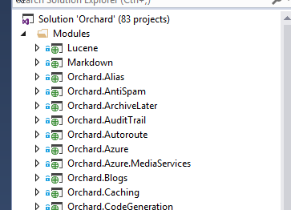
There is a utility that is packaged with each copy of Orchard which will let us add our own module into this list. It is called orchard.exe. This is a command line utility which will scaffold up a new empty module and add it to the main solution. There are also other commands you can use with this utility.
To scaffold a new module:
-
Press the
Save Allbutton (or pressCtrl-Shift-S). Its a good practice to always save before using the command line utility. Many of its commands will make changes to your solution and if you have unsaved changes you will get merge conflicts. -
In the Solution Explorer, scroll down to the
Orchard.Webproject. It should be the very last project in the solution. -
Right click on the
Orchard.Webproject and chooseOpen Folder in File Explorer: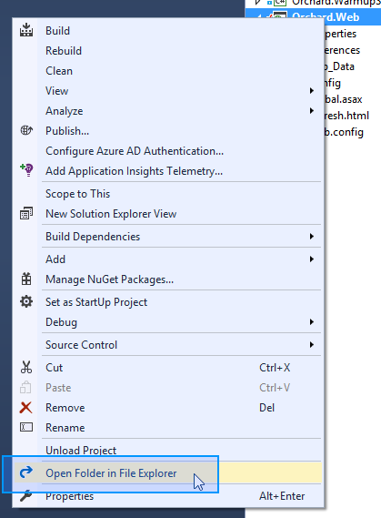
-
Open the
binfolder -
Locate
orchard.exein the list and double click it to open.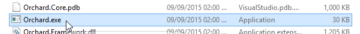
Note: If you don't see
orchard.exein thebinfolder then you didn't follow the steps in the setting up for a lesson guide. You need to have built the solution at least once for this file to exist. PressCtrl-Shift-Bwithin Visual Studio to build the solution. -
After a short pause while it loads you will then be presented with the Orchard command line:
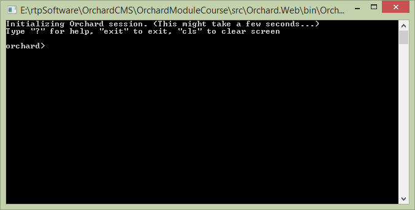
Note: There is a separate article where you can learn more about orchard.exe and its features. You don't need to read it to understand this course but it will be useful to review in the future as part of your overall training.
-
Type the following command:
feature enable Orchard.CodeGenerationand pressenter.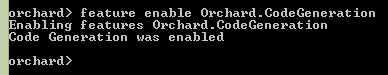
This will activate the code generation features of
orchard.exe.Note: If you get an error saying
No command found matching arguments "feature enable Orchard.CodeGeneration"then you didn't follow the steps in the setting up for a lesson guide. You need to run the solution and go through the Orchard Setup screens before this command is available.The code generation command that we will be using is
codegen module. -
Type
help codegen moduleand press enter to see the syntax for this command. To see details about all of the commands available typehelp commands.Like the rest of Orchard CMS, the orchard.exe command shell is extendable. The total number of commands available can vary depending on what features / modules you have loaded. In a future tutorial we will look at extending orchard.exe with our own commands.
-
Scaffold the module by entering the following command:
codegen module Orchard.LearnOrchard.FeaturedProduct.If you read the help in the last step you might be wondering why we didn't include the
/IncludeInSolution:trueargument. This defaults to true so you don't need to add it. -
Close the Orchard command-line window.
-
This has now created a new, empty module in the file system. Switching back to Visual Studio should show you the
File Modification Detecteddialog: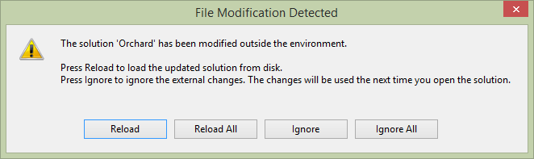
Click
Reload.Note: If you had unsaved changes in your Solution file then click the
Dismissoption and add the project manually. In the Solution Explorer,Right clickon theModulesfolder. ChooseAdd,Existing Project, then navigate to.\src\Orchard.Web\Modules\Orchard.LearnOrchard.FeaturedProduct\, selectOrchard.LearnOrchard.FeaturedProduct.csprojand pressOpen.
The basic framework for a module now exists inside the modules section of your solution:
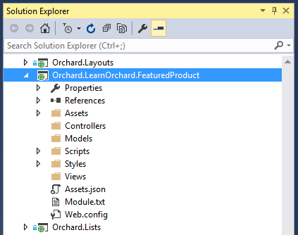
Core concepts refresher
If you are at the stage of wanting to build modules for Orchard then you should already be familiar with the concept of Content Types, Widgets, Content Items and Content Parts. These are all things that you can manage via the admin dashboard and you will have worked with them if you have built any kind of site in Orchard. To refresh your memory:
-
Content Type: The template for a type of content in Orchard. The most common example is the
Pagecontent type which provides the structure for a page of content in an Orchard site. -
Widgets: You can also make a content type that works as a
Widget. TheWidgetis a special variation of content type which can be placed into one of the manyZonesa template defines. It's manageable via the admin dashboard at run-time. Content types can opt-in to this system by configuring theirStereotypesetting toWidget. -
Content Item: This is an instance of a specific content type. When you create a new
Pagein Orchard and fill it with content that is aContent Itemwith aContent TypeofPage. -
Content Part: A small module providing some specific functionality. The
Content Typeis made up by attaching variousContent Partsto it. For example you could have a comments content part. It just manages a block of comments for whatever it is attached to. The same comments content part could be attached to aPagecontent type, aBlogcontent type, or within aWidget.
What we will be building
As you might have guessed from the module name, we are going to build a very simple featured product module. This first step into extending Orchard will be a small one.
The featured product module will be a Widget which shows a static message listing the featured product with a link to that page. It's not going to have any configurable settings behind it so we won't need to look at the database side of things yet. It's not going to be powered by an actual product system. A Widget is a great starting pointing point because it doesn't need to worry about menu settings, titles, URLs or integration into the admin dashboard.
It will be a simple banner which you can display on your site by adding a widget via the admin dashboard. This will be enough to show the core concepts of a module. We will come back and make improvements in the next three parts of this course.
Let's get started with some development by adding classes and other files to our module.
Content part
The content part class is the core data structure. When you scaffolded the module it automatically made you a Models folder. Now we need to add the FeaturedProductPart class to this folder:

-
Right clickon theModelsfolder. -
Choose
Add -
Choose
Class... -
In the
Name:field typeFeaturedProductPart -
Click
Add
Your new class will be created and opened up in the Visual Studio editor.
Important note: In order for Orchard to recognize Content Part classes they must be in a namespace ending
.Models.Because you already added this class within the
Modelsfolder the namespace is automatically wrapped around your class. In the future, when you're making your own classes don't forget to ensure that you follow this namespace structure.
Your content part class will need to derive from the ContentPart class.
Normally we would add public properties to store all the related data but as we are keeping it simple this first example won't have any.

Add the ContentPart inheritance by following these steps:
-
Type
: ContentPartafter yourFeaturedProductPartclass definition to inherit from theContentPartclass. -
Wait a second and the red squiggles will appear underneath the class. Add the namespace by pressing
Ctrl-.on your keyboard to bring up the Quick Actions menu. -
Select the
using Orchard.ContentManagement;option and pressenter.
That's all you need to do for your first ContentPart class. Your FeaturedProductPart.cs file should now look like this:
using Orchard.ContentManagement;
namespace Orchard.LearnOrchard.FeaturedProduct.Models {
public class FeaturedProductPart : ContentPart {
}
}
Data migrations
When your module is enabled in the admin dashboard Orchard will execute a data migration process. The purpose of the data migration is to register a list of the features contained in the module and any data it uses.
We aren't going to use this yet, but the migration is also used for upgrades. As you work on your modules you will want to add and remove bits. The data migration class can make changes and you can transform your existing data to meet your new requirements.
The data migration class can be created by hand, following a similar process as the last section but we can also scaffold it with the orchard.exe command line. Let's dive back in to the command line and add a data migration class to the module.
-
Press the
Save Allbutton (or pressCtrl-Shift-S). Its a good practice to always save before using the command line utility. Many of its commands will make changes to your solution and if you have unsaved changes you will get merge conflicts. -
In the Solution Explorer, scroll down to the
Orchard.Webproject. It should be the very last project in the solution. -
Right click on the
Orchard.Webproject and chooseOpen Folder in File Explorer: -
Open the
binfolder. -
Locate
orchard.exein the list and double click it to open. -
After a short pause while it loads you will then be presented with the Orchard command line:
-
We enabled the code generation feature when scaffolding the module but if you have been playing with Orchard or are just using this guide as a reference it can't hurt to run the command a second time to make sure.
Type the following command:
feature enable Orchard.CodeGenerationand pressenter.This will activate the code generation features of
orchard.exe. The command that we will be using iscodegen datamigration. -
Type
help codegen datamigrationand press enter to see the syntax for this command. To see details about all of the commands available typehelp commands.Like the rest of Orchard CMS, the orchard.exe command shell is extendable. The total number of commands available can vary depending on what features / modules you have loaded. In a future tutorial we will look at extending orchard.exe with our own commands.
-
Scaffold the data migration class by entering the following command:
codegen datamigration Orchard.LearnOrchard.FeaturedProduct. -
Close the Orchard command-line window.
-
This has now created a new data migration the file system called
Migrations.cs. It will be in the root folder of your module.Switching back to Visual Studio should show you the
File Modification Detecteddialog:Click
Reload.Note: If you had unsaved changes in your Solution file then click the
Dismissoption and add the class manually. In the Solution Explorer,right clickon theOrchard.LearnOrchard.FeaturedProductfolder. ChooseAdd,Existing Item, then navigate to.\src\Orchard.Web\Modules\Orchard.LearnOrchard.FeaturedProduct\, selectMigrations.csand pressAdd.
Now you have a Migrations.cs file in the root folder of your module's project. By default it has an empty method called Create() which returns an int. For the moment, returning a value of 1 is fine. It's the version number of your data migration and we will look into it in more detail later in this course.
As discussed earlier the Widget is just a ContentType with a Stereotype of Widget. A ContentType is basically just a collection of ContentParts. Every ContentType should contain the CommonPart which gives you the basics like the owner and date created fields. We will also add the WidgetPart so it knows how to widget. Finally we also include the content part we are building, FeaturedProductPart.
Let's update the Create() method to implement these plans:
-
Open
Migrations.csfrom within your module project if you don't already have it open. -
Replace the
Create()method with the following:public int Create() { ContentDefinitionManager.AlterTypeDefinition( "FeaturedProductWidget", cfg => cfg .WithSetting("Stereotype", "Widget") .WithPart(typeof(FeaturedProductPart).Name) .WithPart(typeof(CommonPart).Name) .WithPart(typeof(WidgetPart).Name)); return 1; }Orchard doesn't have a
CreateTypeDefinitionmethod so even within the create we still usedAlterTypeDefinition. If it doesn't find an existing definition then it will create a new content type. -
Press
Ctrl-.on the red squiggles underFeaturedProductPartandCommonPartthen let Visual Studio add the requiredusingstatements. -
Try the same under the
WidgetPart- you will see Visual Studio doesn't understand where to point theusingstatement at and it only offers you options to generate stubs. We don't want this.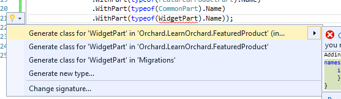
-
Right clickon yourReferencesand chooseAdd Reference...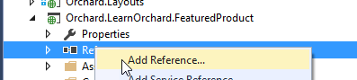
-
Click the
Projectstab on the left. Scroll down until you can seeOrchard.Widgetsin the list.Hoveryour mouse over it and a checkbox will appear. Click the checkbox forOrchard.Widgets. ClickOK.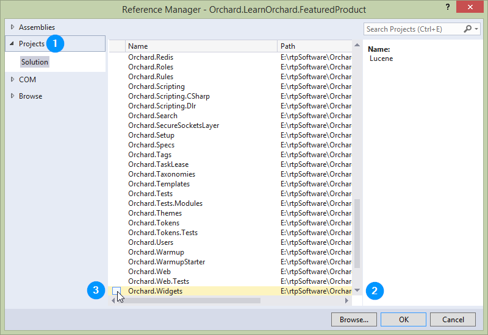
-
Now you can try resolving the red squiggly lines under
WidgetPartagain: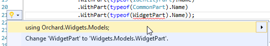
You will now have the correct
using Orchard.Widgets.Modelsoption presented to you. Select it. -
Save your progress so far by clicking the
Save allbutton (or pressCtrl-Shift-S).
That's all for the data migration, your Migrations.cs should now look like this:
using Orchard.ContentManagement.MetaData;
using Orchard.Core.Common.Models;
using Orchard.Data.Migration;
using Orchard.LearnOrchard.FeaturedProduct.Models;
using Orchard.Widgets.Models;
namespace Orchard.LearnOrchard.FeaturedProduct {
public class Migrations : DataMigrationImpl {
public int Create() {
ContentDefinitionManager.AlterTypeDefinition(
"FeaturedProductWidget", cfg => cfg
.WithSetting("Stereotype", "Widget")
.WithPart(typeof(FeaturedProductPart).Name)
.WithPart(typeof(CommonPart).Name)
.WithPart(typeof(WidgetPart).Name));
return 1;
}
}
}
Update dependencies as you go along
In the Create() method of the data migration we introduced a dependency on WidgetPart.
This means that our module won't run without the Orchard.Widgets module being installed and enabled within the system.
In order to let Orchard know that we have this dependency we need to record it in a manifest file called Module.txt. This is a text file written in YAML format which stores meta information about the module like the name, author, description and dependencies on other modules. If you haven't heard of YAML before don't worry, it is a simple format to understand.
We will look at the Module.txt manifest file again in more detail in part 4 of this course, for now we just need to go in and record the dependency we have created with Orchard.Widgets.
It is important to record this information as soon as we make a dependency on a module. If we don't record the information then your module can cause exceptions for your users at run-time. You really need to get into the habit of doing it straight away because not only are they are easy to forget but if you have the module that you depend on already enabled you won't see any errors but your users will.
Lets update the manifest now to include the Orchard.Widgets dependency:
-
In the solution explorer, open up
Module.txtwhich will be located in the root folder of the module. -
The last three lines describe the main feature of the module (we have only one feature in this module):
Features: Orchard.LearnOrchard.FeaturedProduct: Description: Description for feature Orchard.LearnOrchard.FeaturedProduct.Add an extra row underneath
Description:and add aDependencies:entry like this:Features: Orchard.LearnOrchard.FeaturedProduct: Description: Description for feature Orchard.LearnOrchard.FeaturedProduct. Dependencies: Orchard.WidgetsThe indentation is important as creates hierarchy within a YAML document. Indent the line with 8 spaces.
How is all this magic working?
So far the ContentPart class has been magically detected as long as it uses the .Model namespace, now the data migration is automatically detected just for deriving from DataMigrationImpl. How is all of this happening?
Under the hood Orchard uses Autofac, an Inversion of Control container. If you're interested you can learn about how it's integrated in the how Orchard works guide.
Don't worry though, you don't really need to know anything deeper about it other than it's in the background and it automatically scans & registers your components for you.
Later on we will use Autofac's dependency injection which let us automatically get instances of things we need supplied directly into our classes.
Content part driver
Everything you see in Orchard is composed from Shapes. If you don't know about shapes you can learn more about them in the accessing and rendering shapes guide.
A content part driver is a class that composes the shapes that should be used to view and edit content parts. Drivers live in their own folder called Drivers. A basic driver class will contain three methods; a display driver for viewing a content part in the front end, an editor driver for presenting an editor form in the admin dashboard and an update method to handle changes submitted from the editor form.
As the shapes are created in the driver you can also pass data through to a view. Views are discussed in the next section but first we need to wire in the plumbing.
The widget that we are building has no configuration, so all this driver will need is the Display method configuring. The other methods will be added in when we revisit the widget it part two.
There aren't any command line scaffolding commands for setting up new drivers so you will need to create it manually:
-
Make a new
Driversfolder (Right clickon the module project in the solution explorer, clickAdd,New Folder) -
Add a new class called
FeaturedProductDriverby right clicking theDriversfolder, clickingAdd,Class...and typingFeaturedProductDriverfor the name (Visual Studio will automatically add the.cson to the end for you)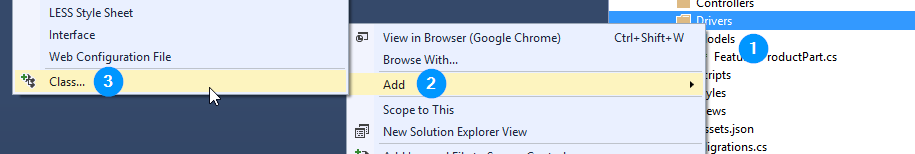
-
Extend the class so it derives from
ContentPartDriver<FeaturedProductPart>(note that the generic type class ends in Part not Driver). -
Add the missing namespaces using the
Ctrl-.shortcut.
In the future we will do a lot with the driver class and the way that it builds its display but for this simple example all we need is a simple class to wire the shape to a view.
- Inside your
FeaturedProductDriverclass add this single method:protected override DriverResult Display(FeaturedProductPart part, string displayType, dynamic shapeHelper) { return ContentShape("Parts_FeaturedProduct", () => shapeHelper.Parts_FeaturedProduct()); }
This says that when displaying the FeaturedProductPart return a shape called Parts_FeaturedProduct. By default Orchard will look for this shape in Views\Parts\FeaturedProduct.cshtml which is what we will build next.
Your FeaturedProductDriver.cs file should now look like this:
using Orchard.ContentManagement.Drivers;
using Orchard.LearnOrchard.FeaturedProduct.Models;
namespace Orchard.LearnOrchard.FeaturedProduct.Drivers {
public class FeaturedProductDriver : ContentPartDriver<FeaturedProductPart> {
protected override DriverResult Display(FeaturedProductPart part,
string displayType, dynamic shapeHelper) {
return ContentShape("Parts_FeaturedProduct", () =>
shapeHelper.Parts_FeaturedProduct());
}
}
}
View
Orchard uses Razor template views to display it's shapes. You can supply strongly-typed data models and use many of the normal ASP.NET MVC Razor view features within Orchard.
For this first widget our needs are simple and we will only be putting plain HTML markup inside the .cshtml file:
-
Add a new folder inside the
Viewsfolder calledParts(Right clickon theViewfolder in the solution explorer, clickAdd,New Folderand typeParts). -
Add a new
.cshtmlRazor view within thePartsfolder calledFeaturedProduct.cshtml -
Within the
FeaturedProduct.cshtmlview file add the following HTML markup:<style> .btn-green { padding: 1em; text-align: center; color: #fff; background-color: #34A853; font-size: 2em; display: block; } </style> <p>Today's featured product is the Sprocket 9000.</p> <p><a href="~/sprocket-9000" class="btn-green">Click here to view it.</a></p>
Placement
Almost all of the key elements are in place now except for this last one. The configuration inside a driver class tells Orchard how to render that content part. Content parts always exist within a larger composite content item. Placement is used to tell Orchard where to render these components.
The placement.info file goes in the root folder of the module. It is an XML file with a simple structure. You can learn more about the placement.info in understanding placement.info guide.
Add the placement.info file to your module:
-
Right clickon the module project in the solution explorer. -
Choose
Add,New Itemto get to the add item screen: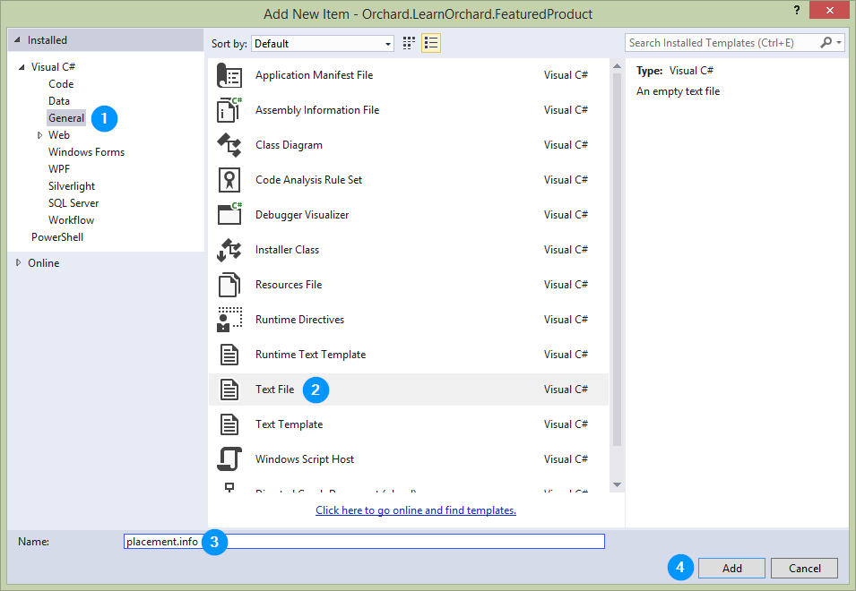
-
From the templates categories in the left hand side, choose
General -
Find
Text Filein the list -
Enter
placement.infoin the Name: field. -
Click
OK
This module has a single shape so we need to set up a <Place> for that shape.
- Add this snippet to the empty placement.info file:
<Placement> <Place Parts_FeaturedProduct="Content:1"/> </Placement>
The Content:1 is the zone and priority of that shape. A shape will have several zones defined for it. Typically these include the header, content, meta and footer but they can have any combination of zones defined. In this case the Content is the main content area.
The priority means that it will be near the top of the content zone. In more complicated modules there could be several shapes. Setting different priorities will let you organize their display order when you want them to be in the same zone. For example, if another shape had a place of Content:0.5 it would go before it, Content:15 and it would go after it.
Theme developers can customize these layout preferences by providing their own placement.info and overriding your initial configuration. This lets theme authors customize your module without having to make changes to the actual code. This means when the module is upgraded to a new version the theme developers changes will not be overwritten.
Trying the module out in Orchard
Congratulations, you've made it to the pay off, using the module in Orchard!
The last few steps will enable the module in Orchard and assign the widget to a zone in the active template:
-
In Visual Studio, press
Ctrl-F5to start the dev server without debugging mode enabled. -
Log in to the admin dashboard. The login link will be in the footer of the site.
-
Click
Modulesin the navigation menu. -
The first item in the list should be our module,
Orchard.LearnOrchard.FeaturedProduct: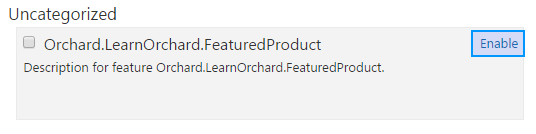
Click
Enableto activate the plugin: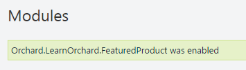
-
You can now add the Widget to a layer in the site. Click
Widgetsfrom the navigation menu. -
In the
AsideFirstsection of the Widgets page click theAddbutton: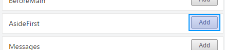
-
The
Featured Product Widgetwill be in the list, click the item to select it: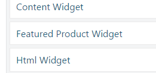
-
You can leave most of the
Widgetsettings on their defaults. Just set theTitletoFeatured Product: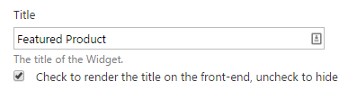
-
Click
Saveat the bottom of the page.
If you go back to the main site now you will see the module in the site:
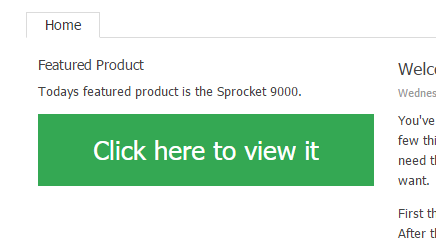
We haven't created a page for the Sprocket 9000 so clicking the button will give a 404 at the moment.
Download the code for this lesson
You can download a copy of the module so far at this link:
To use it in Orchard simply extract the archive into the modules directory at .\src\Orchard.Web\Modules\.
For Orchard to recognize it the folder name should match the name of the module. Make sure that the folder name is
Orchard.LearnOrchard.FeaturedProductand then the modules files are located directly under that.
Conclusion
This first guide in the module introduction course has shown the main components of a module.
In the next part we will extend the module to add some interactivity to the module. This means adding database backing, an editor view, configuration settings and we will dip our toes in with some of the Orchard API features.
In the final part of the course we will review the module and clean it up to ensure we follow development best practices that have been missed so far.
This was a long guide. Take a break now and when you're refreshed come back and read part two of the course.